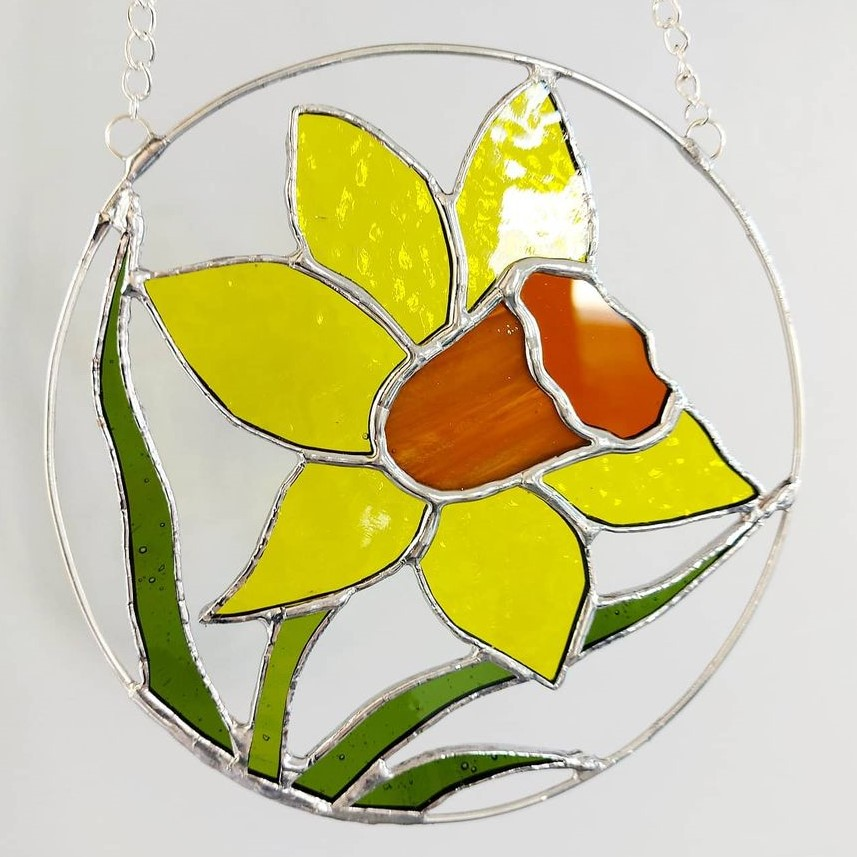
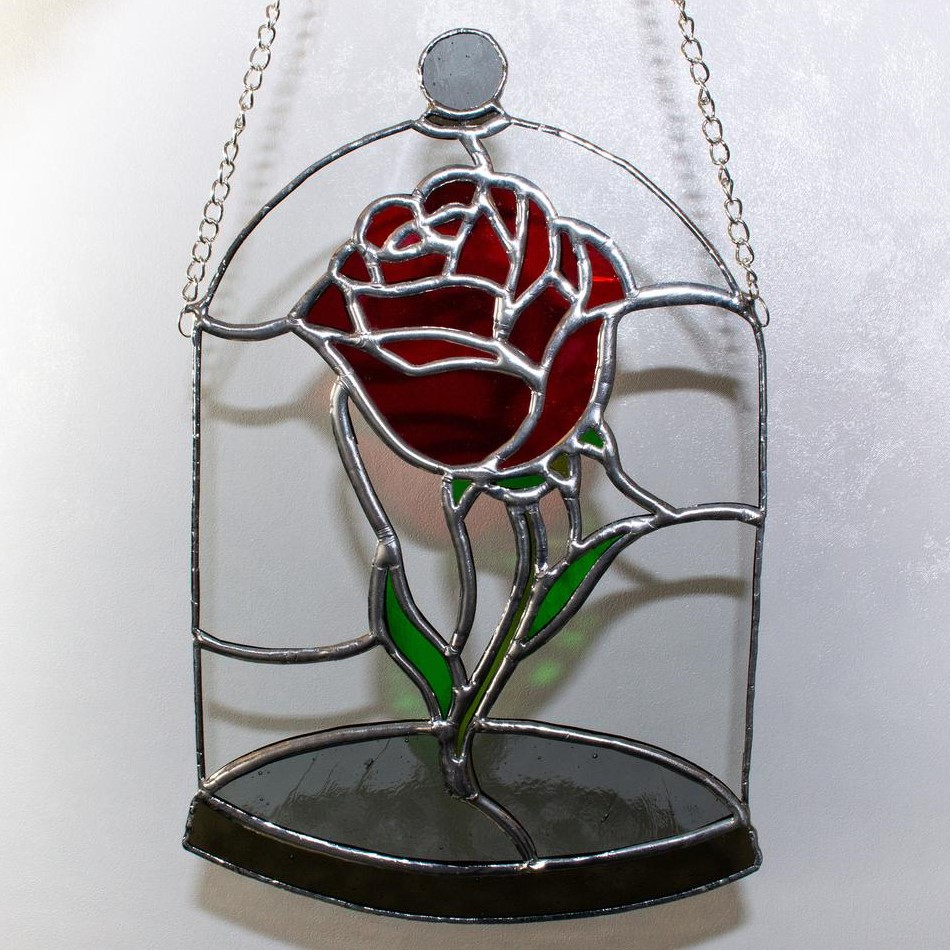
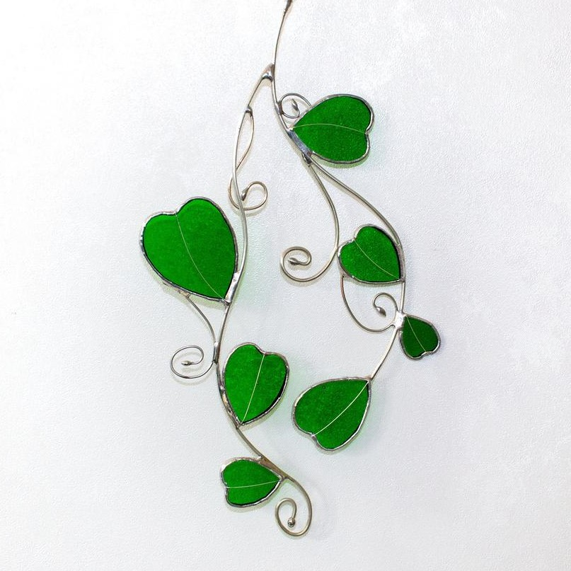
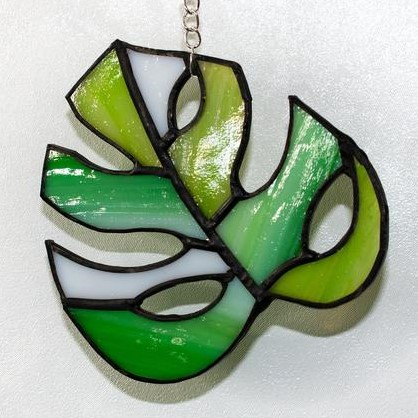
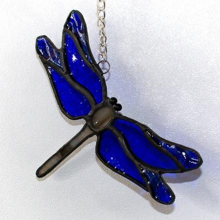

Birch Glass
Lovingly handmade plant stakes and suncatchers.
Portfolio
I mainly make suncatchers and plant stakes/sticks.
Here are just a few.

Stake Daffodil

Suncatcher Rose

Suncatcher Vine

Stake Leaf

Stake Dragonfly
Process
- The pattern is created in Photoshop, either from a sketch or a commission idea.
- I then choose the perfect glass for the project, there are many different types of glass, some are plain translucent coloured glass, wispy, there are many textured glass sheets such as water glass, there is completely opaque and some incredible opalescent and iridised glass also!
- The pattern is then printed, and transferred onto the glass pieces.
- The glass is scored along the pattern and snapped with special pliers to follow the lines of the template.
- The glass edges are grinded and smoothed.
- The edges are then wrapped in a copper foil and burnished over the glass so that solder will run along the edges, attaching the glass pieces together.
- The piece is then carefully soldered together, cleaned up and polished, and done!